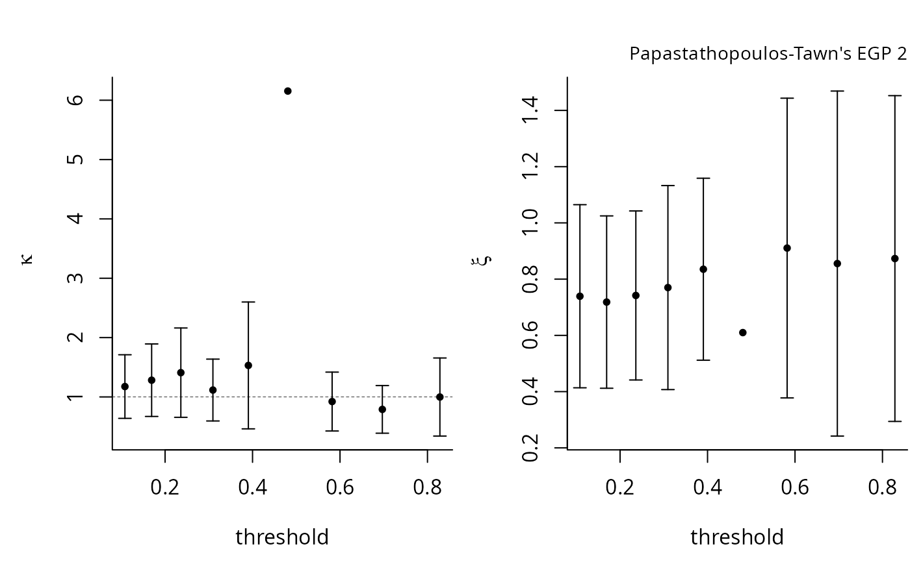

Parameter stability plot and maximum likelihood routine for extended GP models
Source:R/penultimate.R
fit.egp.RdThe function tstab.egp provides classical threshold stability plot for (\(\kappa\), \(\sigma\), \(\xi\)).
The fitted parameter values are displayed with pointwise normal 95% confidence intervals.
The function returns an invisible list with parameter estimates and standard errors, and p-values for the Wald test that \(\kappa=1\).
The plot is for the modified scale (as in the generalised Pareto model) and as such it is possible that the modified scale be negative.
tstab.egp can also be used to fit the model to multiple thresholds.
Arguments
- xdat
vector of observations, greater than the threshold
- thresh
threshold value
- model
a string indicating which extended family to fit
- init
vector of initial values, with \(\log(\kappa)\) and \(\log(\sigma)\); can be omitted.
- show
logical; if
TRUE, print the results of the optimization- plots
vector of integers specifying which parameter stability to plot (if any); passing
NAresults in no plots- umin
optional minimum value considered for threshold (if
threshis not provided)- umax
optional maximum value considered for threshold (if
threshis not provided)- nint
optional integer number specifying the number of thresholds to test.
- changepar
logical; if
TRUE, the graphical parameters (via a call topar) are modified.- ...
additional arguments for the plot function, currently ignored
Value
fit.egp outputs the list returned by optim, which contains the parameter values, the hessian and in addition the standard errors
tstab.egp returns a plot(s) of the parameters fit over the range of provided thresholds, with pointwise normal confidence intervals; the function also returns an invisible list containing notably the matrix of point estimates (par) and standard errors (se).
Details
fit.egp is a numerical optimization routine to fit the extended generalised Pareto models of Papastathopoulos and Tawn (2013),
using maximum likelihood estimation.
References
Papastathopoulos, I. and J. Tawn (2013). Extended generalised Pareto models for tail estimation, Journal of Statistical Planning and Inference 143(3), 131--143.
Examples
xdat <- evd::rgpd(
n = 100,
loc = 0,
scale = 1,
shape = 0.5)
fitted <- fit.egp(
xdat = xdat,
thresh = 1,
model = "egp2",
show = TRUE)
#> Model: egp2
#> Deviance: 173.7802
#>
#> Threshold: 1
#> Number Above: 43
#> Proportion Above: 0.43
#>
#> Estimates
#> kappa scale shape
#> 0.8367 1.6016 0.8835
#>
#> Standard Errors
#> kappa scale shape
#> 0.2500 1.1132 0.3368
#>
#> Optimization Information
#> Convergence: successful
#> Function Evaluations: 67
#> Gradient Evaluations: 13
#>
thresh <- evd::qgpd(seq(0.1, 0.5, by = 0.05), 0, 1, 0.5)
tstab.egp(
xdat = xdat,
thresh = thresh,
model = "egp2",
plots = 1:3)
#> Error in plot.window(...): need finite 'ylim' values
